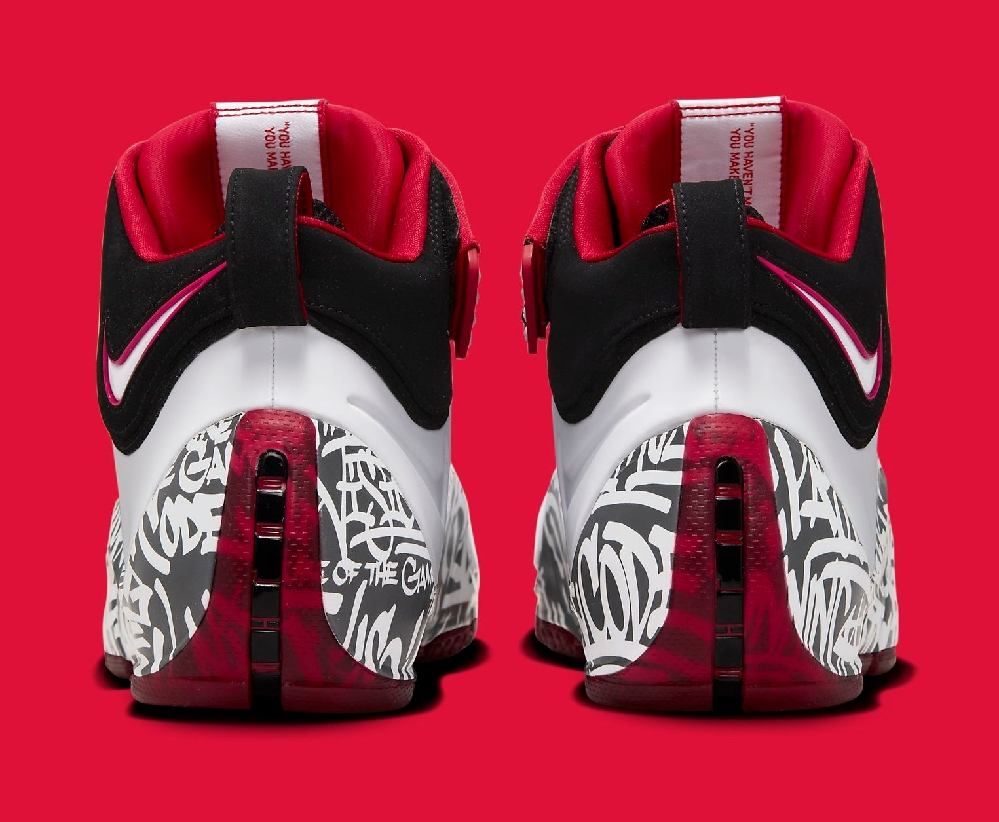
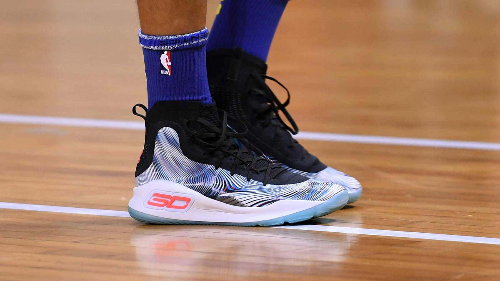
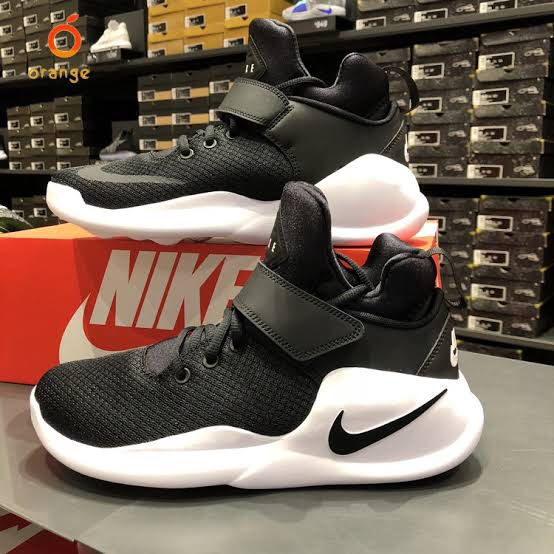

A primeira ideia do que viria a ser a Jordan Style começou em 1996, quando a nike e a adidas ainda estavam em fase de formação e surgiu com o objetivo de revolucionar o mercado voltado para o mundo do basquete.